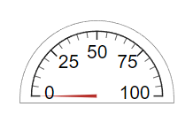
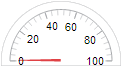
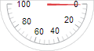
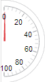
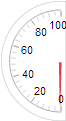

SemicircularGauge
Semicircular gauge UI component
- 
Description
A semicircular gauge UI component represents a measurement instrument that
displays a measurement in an app. Use the SemicircularGauge object to modify
the appearance and behavior of a semicircular gauge after you create it.
Creation
Create a semicircular gauge in an app using the uigauge function, specifying the gauge style as
"semicircular".
Properties
Gauge
Orientation of the gauge, specified as one of the following:
'north' |  |
'south' |  |
'east' |  |
'west' |  |
Scale colors, specified as one of the following arrays:
A 1-by-
nstring array of color options, such as["blue" "green" "red"].An
n-by-3 array of RGB triplets, such as[0 0 1;1 1 0].A 1-by-
ncell array containing RGB triplets, hexadecimal color codes, or named color options. For example,{'#EDB120','#7E2F8E','#77AC30'}.
RGB triplets and hexadecimal color codes are useful for specifying custom colors.
An RGB triplet is a three-element row vector whose elements specify the intensities of the red, green, and blue components of the color. The intensities must be in the range
[0,1]; for example,[0.4 0.6 0.7].A hexadecimal color code is a character vector or a string scalar that starts with a hash symbol (
#) followed by three or six hexadecimal digits, which can range from0toF. The values are not case sensitive. Thus, the color codes"#FF8800","#ff8800","#F80", and"#f80"are equivalent.
Alternatively, you can specify some common colors by name. This table lists the named color options, the equivalent RGB triplets, and hexadecimal color codes.
| Color Name | Short Name | RGB Triplet | Hexadecimal Color Code | Appearance |
|---|---|---|---|---|
"red" | "r" | [1 0 0] | "#FF0000" |
|
"green" | "g" | [0 1 0] | "#00FF00" |
|
"blue" | "b" | [0 0 1] | "#0000FF" |
|
"cyan"
| "c" | [0 1 1] | "#00FFFF" |
|
"magenta" | "m" | [1 0 1] | "#FF00FF" |
|
"yellow" | "y" | [1 1 0] | "#FFFF00" |
|
"black" | "k" | [0 0 0] | "#000000" |
|
"white" | "w" | [1 1 1] | "#FFFFFF" |
|
This table lists the default color palettes for plots in the light and dark themes.
| Palette | Palette Colors |
|---|---|
Before R2025a: Most plots use these colors by default. |
|
|
|
You can get the RGB triplets and hexadecimal color codes for these palettes using the orderedcolors and rgb2hex functions. For example, get the RGB triplets for the "gem" palette and convert them to hexadecimal color codes.
RGB = orderedcolors("gem");
H = rgb2hex(RGB);Before R2023b: Get the RGB triplets using RGB =
get(groot,"FactoryAxesColorOrder").
Before R2024a: Get the hexadecimal color codes using H =
compose("#%02X%02X%02X",round(RGB*255)).
Each color of the ScaleColors array corresponds to a colored
section of the gauge. Set the ScaleColorLimits property to map the
colors to specific sections of the gauge.
If you do not set the ScaleColorLimits property, MATLAB® distributes the colors equally over the range of the gauge.
Ticks
Font and Color
Font color, specified as an RGB triplet, a hexadecimal color code, or one of the options listed in the table.
RGB triplets and hexadecimal color codes are useful for specifying custom colors.
An RGB triplet is a three-element row vector whose elements specify the intensities of the red, green, and blue components of the color. The intensities must be in the range
[0,1]; for example,[0.4 0.6 0.7].A hexadecimal color code is a character vector or a string scalar that starts with a hash symbol (
#) followed by three or six hexadecimal digits, which can range from0toF. The values are not case sensitive. Thus, the color codes"#FF8800","#ff8800","#F80", and"#f80"are equivalent.
Alternatively, you can specify some common colors by name. This table lists the named color options, the equivalent RGB triplets, and hexadecimal color codes.
| Color Name | Short Name | RGB Triplet | Hexadecimal Color Code | Appearance |
|---|---|---|---|---|
"red" | "r" | [1 0 0] | "#FF0000" |
|
"green" | "g" | [0 1 0] | "#00FF00" |
|
"blue" | "b" | [0 0 1] | "#0000FF" |
|
"cyan"
| "c" | [0 1 1] | "#00FFFF" |
|
"magenta" | "m" | [1 0 1] | "#FF00FF" |
|
"yellow" | "y" | [1 1 0] | "#FFFF00" |
|
"black" | "k" | [0 0 0] | "#000000" |
|
"white" | "w" | [1 1 1] | "#FFFFFF" |
|
This table lists the default color palettes for plots in the light and dark themes.
| Palette | Palette Colors |
|---|---|
Before R2025a: Most plots use these colors by default. |
|
|
|
You can get the RGB triplets and hexadecimal color codes for these palettes using the orderedcolors and rgb2hex functions. For example, get the RGB triplets for the "gem" palette and convert them to hexadecimal color codes.
RGB = orderedcolors("gem");
H = rgb2hex(RGB);Before R2023b: Get the RGB triplets using RGB =
get(groot,"FactoryAxesColorOrder").
Before R2024a: Get the hexadecimal color codes using H =
compose("#%02X%02X%02X",round(RGB*255)).
Background color, specified as an RGB triplet, a hexadecimal color code, or one of the color options listed in the table.
RGB triplets and hexadecimal color codes are useful for specifying custom colors.
An RGB triplet is a three-element row vector whose elements specify the intensities of the red, green, and blue components of the color. The intensities must be in the range
[0,1]; for example,[0.4 0.6 0.7].A hexadecimal color code is a character vector or a string scalar that starts with a hash symbol (
#) followed by three or six hexadecimal digits, which can range from0toF. The values are not case sensitive. Thus, the color codes"#FF8800","#ff8800","#F80", and"#f80"are equivalent.
Alternatively, you can specify some common colors by name. This table lists the named color options, the equivalent RGB triplets, and hexadecimal color codes.
| Color Name | Short Name | RGB Triplet | Hexadecimal Color Code | Appearance |
|---|---|---|---|---|
"red" | "r" | [1 0 0] | "#FF0000" |
|
"green" | "g" | [0 1 0] | "#00FF00" |
|
"blue" | "b" | [0 0 1] | "#0000FF" |
|
"cyan"
| "c" | [0 1 1] | "#00FFFF" |
|
"magenta" | "m" | [1 0 1] | "#FF00FF" |
|
"yellow" | "y" | [1 1 0] | "#FFFF00" |
|
"black" | "k" | [0 0 0] | "#000000" |
|
"white" | "w" | [1 1 1] | "#FFFFFF" |
|
This table lists the default color palettes for plots in the light and dark themes.
| Palette | Palette Colors |
|---|---|
Before R2025a: Most plots use these colors by default. |
|
|
|
You can get the RGB triplets and hexadecimal color codes for these palettes using the orderedcolors and rgb2hex functions. For example, get the RGB triplets for the "gem" palette and convert them to hexadecimal color codes.
RGB = orderedcolors("gem");
H = rgb2hex(RGB);Before R2023b: Get the RGB triplets using RGB =
get(groot,"FactoryAxesColorOrder").
Before R2024a: Get the hexadecimal color codes using H =
compose("#%02X%02X%02X",round(RGB*255)).
Interactivity
Tooltip, specified as a character vector, cell array of character vectors, string array, or 1-D categorical array. Use this property to display a message when the user hovers the pointer over the component at run time. The tooltip displays even when the component is disabled. To display multiple lines of text, specify a cell array of character vectors or a string array. Each element in the array becomes a separate line of text. If you specify this property as a categorical array, MATLAB uses the values in the array, not the full set of categories.
Context menu, specified as a ContextMenu object created using the uicontextmenu function. Use this property to display a context menu when
you right-click on a component.
Position
Location and size of the gauge relative to the parent container, specified as the
vector, [left bottom width height].
| Element | Description |
|---|---|
left | Distance from the inner left edge of the parent container to the outer left edge of an imaginary box surrounding the gauge |
bottom | Distance from the inner bottom edge of the parent container to the outer bottom edge of an imaginary box surrounding the gauge |
width | Distance between the right and left outer edges of the gauge |
height | Distance between the top and bottom outer edges of the gauge |
All measurements are in pixel units.
The gauge has a fixed width-to-height aspect ratio of 24 to 13. Therefore, you
cannot change the gauge width and height independently of one another. To change the
gauge size, specify a desired size for the gauge by using g.Position(3:4) =
[width height]. MATLAB automatically sizes the gauge to fit within the box defined by the
desired size while maintaining its aspect ratio.
The Position values are relative to the
drawable area of the parent container. The drawable area is the area
inside the borders of the container and does not include the area occupied by decorations such
as a menu bar or title.
Example: [100 100 100 20]
Inner location and size of the gauge, specified as [left bottom width
height]. Position values are relative to the parent container. All
measurements are in pixel units. This property value is identical to the
Position property.
This property is read-only.
Outer location and size of the gauge, returned as [left bottom width
height]. Position values are relative to the parent container. All
measurements are in pixel units. This property value is identical to
Position property.
Layout options, specified as a
GridLayoutOptions object. This property specifies options for
components that are children of grid layout containers. If the component is not a
child of a grid layout container (for example, it is a child of a figure or panel),
then this property is empty and has no effect. However, if the component is a child of
a grid layout container, you can place the component in the desired row and column of
the grid by setting the Row and Column
properties on the GridLayoutOptions object.
For example, this code places a semicircular gauge in the third row and second column of its parent grid.
g = uigridlayout([4 3]);
gauge = uigauge(g,'semicircular');
gauge.Layout.Row = 3;
gauge.Layout.Column = 2;To make the gauge span multiple rows or columns, specify the
Row or Column property as a two-element
vector. For example, this gauge spans columns 2 through
3:
gauge.Layout.Column = [2 3];
Callbacks
Callback Execution Control
Parent/Child
Parent container, specified as a Figure object or
one of its child containers: Tab, Panel, ButtonGroup, or
GridLayout. If no container is specified,
MATLAB calls the uifigure function to create a new Figure object that serves as the parent container.
Identifiers
This property is read-only.
Type of graphics object, returned as
'uisemicirculargauge'.
Examples
Create a semicircular gauge in a UI figure.
fig = uifigure("Position",[100 100 300 300]); sg = uigauge(fig,"semicircular");
Change the colors of the high gauge values by setting the ScaleColors and ScaleColorLimits properties.
sg.ScaleColors = ["yellow","red"]; sg.ScaleColorLimits = [60 80; 80 100];